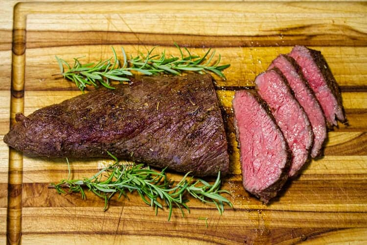

BBQ Tri-tip Recipe

Description
If you're looking for a dish that reminds you of a
traditional American summer, look no further. This
simple and quick BBQ tri-tip recipe is the perfect fix
for that memorable summer dinner you've been looking for.
Ingredients
- 1 Tri-tip (any weight)
- Salt
- Pepper
- Garlic Powder
- Onion Powder
Steps
- Remove the tri-tip from packaging and trim off any excess fat (unless it is pre-trimmed).
- Season very generously with salt, pepper, onion powder, and garlic powder.
- Place tri-tip on the BBQ when the grill has reached 400 degrees, and cook both sides for 10-15 minutes each.
- Remove tri-tip and let rest for 5-10 minutes before serving.
- Enjoy!